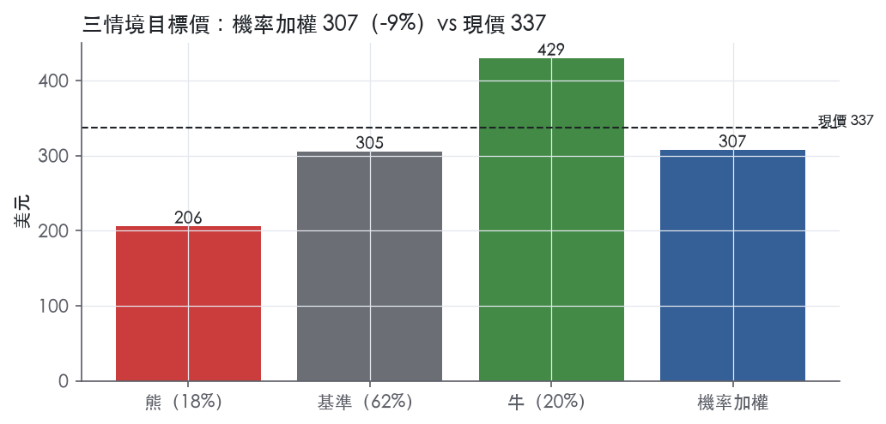
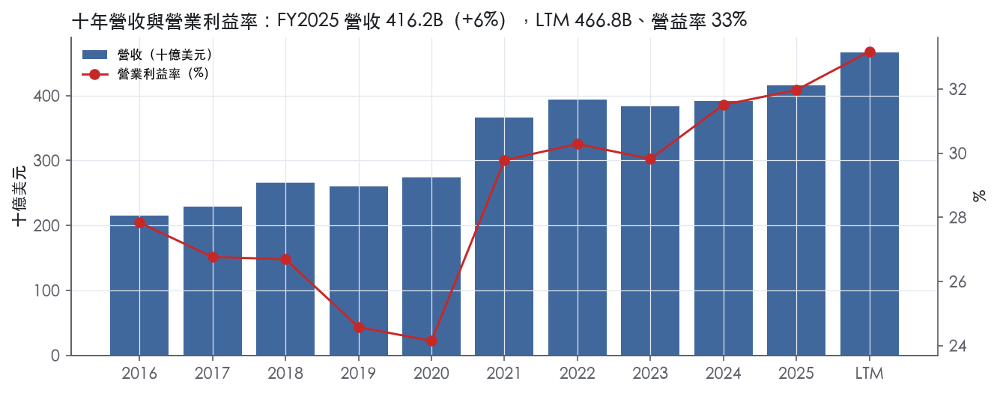
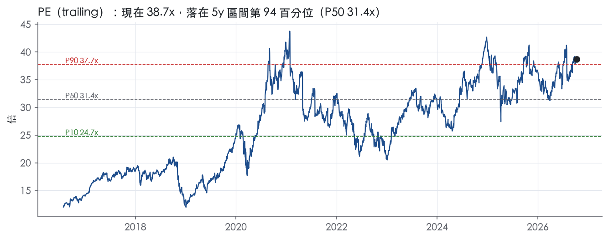
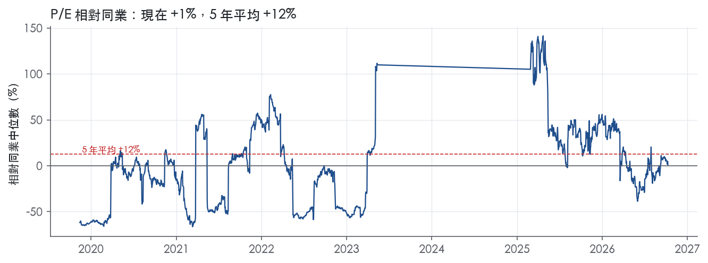
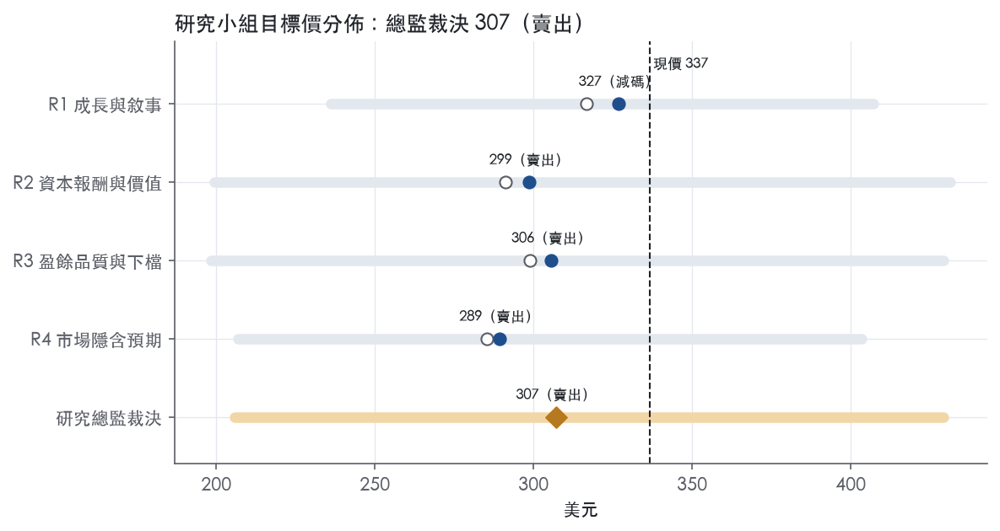
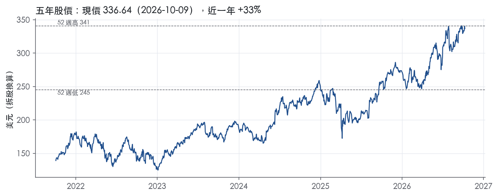

評等總表 › 資訊科技 › AAPL
成長降檔、倍數回30x，看空｜評等 賣出｜目標價 307
| 報告日 | 評等 | 目標價 | 當時股價 | 超額報酬 |
|---|---|---|---|---|
| 2026-10-09 | 賣出 | 307 | 337 | -18.7% |
| 評等 | 賣出 |
| 12 個月目標價 | 307 美元 |
| 現價 | 336.64 美元（2026-10-09） |
| 預期報酬 | 股價 -8.8%＋股息 0.3%＝總報酬 -8.5%；同業籃門檻 10.2%，超額 -18.7% |
| 估值方法 | P/E 30.0x，套在第 5–8 季的EPS（也就是一年後的未來四季） |
| 三情境 | 熊 206／基準 305／牛 429 |
| 研究流程 | 四位研究員兩輪辯論＋研究總監裁決 |
| 資料來源 | SEC EDGAR XBRL、Tiingo、FRED（全免費） |
成長降檔、倍數回30x，看空（研究總監裁決，四位研究員兩輪辯論後）
評等 賣出｜12 個月目標價 307 美元（總監三情境機率加權 312 與研究員中位數 302 各半）｜現價 336.64（2026-10-09）
預期報酬：股價 -8.8%＋股息 0.3%＝總報酬 -8.5%。同業籃門檻 10.2%，超額 -18.7%。
估值方法：P/E 30.0x，套在第 5–8 季的EPS（也就是一年後的未來四季）。三情境：熊 206（18%）／基準 305（62%）／牛 429（20%）。
什麼會讓研究總監改變看法：FY2027Q1 在 143.76B 高基期上營收仍年增 ≥13%，且扣退款毛利率年擴張 >2 個百分點——週期框架失效，y2 回 8.8%、倍數升至 33x，立場轉中性。
| 過去四季（實際，FY2026Q3） | 未來四季 | 第 5–8 季 | 第 9–12 季 | |
|---|---|---|---|---|
| 營收（B） | 466.8B | 508.8B | 536.8B | 569.0B |
| 營收成長 | 14.2% | 9.0% | 5.5% | 6.0% |
| 營業利益率 | 33.2% | 33.0% | 32.5% | 32.5% |
| EPS（美元） | 8.70 | 9.63 | 10.17 | 10.95 |
| EPS 成長 | 32.3% | 10.7% | 5.5% | 7.7% |
| 每股股息（美元） | 1.05 | 1.05 | 1.05 | 1.05 |
| P/E（現價） | 38.7x | 34.9x | 33.1x | 30.7x |
| 股息殖利率（現價） | 0.3% | 0.3% | 0.3% | 0.3% |
過去四季為申報數字；預測為研究總監的假設、程式計算。倍數與殖利率都用現價計算，用來看現價對應各期獲利的高低。
| 情境 | 機率（歷史） | 故事 | 未來四季營收成長 | 第 5–8 季營益率 | 倍數 | 目標價 | 股價漲跌 |
|---|---|---|---|---|---|---|---|
| 熊 | 18%（17%） | 對應風險表第 1、2、3 條：FY2027Q1 對 143.76B 高基期換機斷層、關稅退款消失加互惠關稅、iPhone 集中度、Google 搜尋授權救濟上訴改判削掉高毛利 Services，倍數回前瞻帶 P50 23.7x 附近 | 6.0% | 31.0% | 23.0x | 206 | -38.9% |
| 基準 | 62%（63%） | 週期後段：NTM 9%、Q5–Q8 5.5%（Services 雙位數底盤、Products 低個位數），退款不重現、R&D 去槓桿使營益率 32.5%，一年後 trailing P/E 回到 5 年中位數附近 | 9.0% | 32.5% | 30.0x | 305 | -9.4% |
| 牛 | 20%（20%） | Siri AI 延長 iPhone 18 換機週期，近三季 16% 斜率延續到 NTM，營益率站上 FY2026Q1 單季 35.4% 的全年水準，市場維持現行 trailing 倍數 | 15.0% | 35.0% | 35.0x | 429 | 27.5% |
目標價由程式依研究總監的驅動與倍數計算；機率由研究總監給定。括號內是歷史頻率：把這檔股票過去十年 12 個月報酬的波動形狀，置中在基準情境，結果落在各情境附近的比例。

四位研究員用不同方法各自估值，回應研究總監的質疑後交出第二輪，最後由總監逐點裁決。各研究員的主張見第七章，裁決理由見第八章，完整論證見《研究底稿》。
| 立場（一輪→二輪） | 加權目標價（一輪→二輪） | 評等（一輪→二輪） | 第二輪倍數 | 熊～牛目標價 | |
|---|---|---|---|---|---|
| R1 成長與敘事 | 看空→看空 | 317→327 | 賣出→減碼 | 33.0x | 236～407 |
| R2 資本報酬與價值 | 看空→看空 | 291→299 | 賣出→賣出 | 28.0x | 199～431 |
| R3 盈餘品質與下檔 | 看空→看空 | 299→306 | 賣出→賣出 | 30.0x | 198～429 |
| R4 市場隱含預期 | 看空→看空 | 285→289 | 賣出→賣出 | 28.0x | 207～403 |
| 研究總監裁決 | 看空 | 307 | 賣出 | 30.0x | 206～429 |
目標價由程式依各自的驅動與倍數計算；評等＝機率加權總報酬 − 同業籃門檻。
Apple 是一家靠硬體生態圈綁定服務訂閱的消費電子公司，核心賺錢邏輯是用 iPhone 等硬體建立裝置基數，再用 Services 把毛利率往上拉。「The Company designs, manufactures and markets smartphones, personal computers, tablets, wearables and accessories, and sells a variety of related services.」¹。客戶群鎖定消費者、中小企業、教育、企業與政府市場：「The Company’s customers are primarily in the consumer, small and mid-sized business, education, enterprise and government markets.」¹。公司在產品與服務上採全解決方案策略，自己設計軟硬體與服務：「The Company designs and develops nearly the entire solution for its products, including the hardware, operating system, numerous software applications and related services.」¹。FY2025 全年營收 416.16B，LTM（至 FY2026Q3）已推進到 466.82B，顯示近期成長明顯加速。
Apple 財報上用產品線與地理區雙軌揭露，但正式「reportable segments」是地理區，產品只是銷售分類。產品線包括 iPhone、Mac、iPad、Wearables/Home/Accessories 四條硬體線，以及 Services：「iPhone is the Company’s line of smartphones based on its iOS operating system.」「Mac is the Company’s line of personal computers based on its macOS operating system.」「iPad is the Company’s line of multipurpose tablets based on its iPadOS operating system.」¹。Wearables、Home 與 Accessories 合併揭露，涵蓋 Apple Watch、AirPods、Vision Pro 與 Apple TV／HomePod：「Wearables includes smartwatches, wireless headphones and spatial computers.」¹。Services 下含 Advertising、AppleCare、Cloud Services、Digital Content（App Store、Apple Music、Apple TV 等）與 Payment Services（Apple Card、Apple Pay）：「The Company offers payment services, including Apple Card, a co-branded credit card, and Apple Pay, a cashless payment service.」¹。
從最近一季（FY2026Q3，截至 2026-06-27）看規模：iPhone 54,252M，年增約 22%；Services 30,739M；Mac 10,352M；iPad 6,191M；Wearables/Home/Accessories 7,883M²。iPhone 占該季總營收約 50%，Services 占約 28%，兩者合計近八成，剩下 Mac、iPad、穿戴分食。地理區分部正式定義為 Americas、Europe、Greater China、Japan、Rest of Asia Pacific：「The Company’s reportable segments consist of the Americas, Europe, Greater China, Japan and Rest of Asia Pacific.」¹。10-K 未揭露各產品線的毛利率拆分，只有合併毛利率（FY2025 46.9%，對應年度表）。
通路結構是直營四成、經銷六成，公司自己給了精確比例：「During 2025, the Company’s net sales through its direct and indirect distribution channels accounted for 40% and 60%, respectively, of total net sales.」¹。地理區營收以 Americas 最大，FY2026Q3 單季 45,781M，年增約 11%；其次 Europe 29,395M；Greater China 18,816M，年增約 22%為各區最快；Japan 6,554M；Rest of Asia Pacific 8,871M²。公司強調本季「double-digit revenue growth across iPhone, Mac and Services, and in every geographic segment」²，顯示成長不是單一地區拉動。供應鏈高度集中於亞洲代工夥伴，且公司明確承認單一來源風險：「A significant majority of the Company’s manufacturing is performed in whole or in part by outsourcing partners located primarily in China mainland, India, Japan, South Korea, Taiwan and Vietnam.」¹。
過去四季營收與獲利能力同步走高，FY2026Q1 到 Q3 連續三季營收年增都在雙位數。FY2025Q4（2025-09-27）營收 102.47B，年增 7.9%，毛利率 47.2%（is/dv 對應資料包 FY2025Q4 欄）【判，數字取自資料包】。FY2026Q1（2025-12-27）營收 143.76B，年增 15.7%，毛利率 48.2%，EPS 2.84（資料包 FY2026Q1 欄）【判，數字取自資料包】。FY2026Q2（2026-03-28）營收 111.2B，年增 17%，EPS 2.01，年增 22%：「The Company posted quarterly revenue of $111.2 billion, up 17 percent year over year. Diluted earnings per share was $2.01, up 22 percent year over year.」³；該季 iPhone 56,994M、Services 30,976M、Americas 45,093M、Greater China 20,497M 均創或接近 3 月季新高³；董事會同時宣布股利調升至每股 0.27 美元並新增最高 100B 美元庫藏股額度：「The board of directors has also authorized an additional program to repurchase up to $100 billion of the Company’s common stock.」³。FY2026Q3（2026-06-27）營收 109.4B，年增 16%，毛利率 50.1%（含約 2 個百分點關稅退款挹注），EPS 2.02，年增 29%（含關稅退款 0.11 美元貢獻）：「The Company posted quarterly revenue of $109.4 billion, up 16 percent year over year. Company gross margin was 50.1 percent, including a favorable impact of approximately 2 percentage points from tariff refunds.」²。CFO 定調本季為「strongest June quarter ever, with... new June quarter records for both EPS and operating cash flow」²。公司未在這兩份新聞稿中提供下一季正式財測區間，僅在文字稿中強調裝置基數與各品類創高。
公司把成長敘事放在新品週期、AI 功能與裝置基數擴張三件事上。產品面，公司強調新一代 iPhone 陣容驅動需求：「iPhone achieved a March quarter revenue record, fueled by such extraordinary demand for the iPhone 17 lineup.」³。軟體與 AI 面，公司在 WWDC26 推出新一代 Siri：「At WWDC26, we were thrilled to introduce the all-new Siri AI, alongside all of Apple’s latest software innovations and important new child safety features.」²。裝置基數被反覆提及為成長的底層指標：「Our installed base of active devices also reached a new all-time high across all major product categories and geographic segments.」²。資本配置上公司持續擴大庫藏股並調升股利，同時維持高強度研發支出（FY2026 前九月 R&D 34,035M，年增約 33%）²。
Apple 目前的成長故事已經從「iPhone 單一爆款」轉為「iPhone＋Services＋AI 功能」三者疊加，Services 毛利率結構性墊高集團毛利率（FY2025 46.9% 一路墊到 FY2026Q3 單季 50.1%，但後者有關稅退款干擾）。地理區全面雙位數成長與創新高的裝置基數，支撐了目前 trailing P/E 38.7x、EV/Sales 10.6x 處於五年高分位的估值，但這也意味市場已經把「全面加速」的敘事price in，後續股價動能更依賴新品週期能否延續同等斜率而非基數效應。

Apple 評為寬護城河，趨勢穩定。
核心依據是品牌溢價和軟硬體整合生態造成的轉換成本。
這兩項優勢讓公司在 10-K 自述「價格競爭激烈、毛利率承壓」的市場中，十年毛利率仍從 37.8% 墊高到 46.9%。
監管對 App Store 與 IP 的潛在干預，是唯一足以讓趨勢轉為「變窄」的變數。
目前它還不足以動搖 10 年以上 ROIC 高於資本成本的判斷。
主要來源是無形資產（品牌）與轉換成本，網路效應居次，成本優勢與效率規模不成立。
無形資產（品牌為主，專利為輔）：公司把商譽列為主要競爭要素，原文是「corporate reputation」。¹
IP 組合規模大，原文是「is currently pursuing thousands of applications around the world」。¹
但公司自己承認 IP 不是主力，原文是「the Company relies primarily on the innovative skills, technical competence and marketing abilities of its personnel」。¹
因此專利本身只算輔助，真正的無形資產是品牌支撐的定價權。
轉換成本：Apple 自建整套方案，原文是「designs and develops nearly the entire solution for its products, including the hardware, operating system, numerous software applications and related services」。¹
雲端服務把用戶資料綁在多台裝置上，原文是「store and keep customers’ content up-to-date and available across multiple Apple devices」。¹
用戶一旦離開，要同時放棄 iOS、macOS、watchOS 之間的資料、購買內容與配件，這就是轉換成本的實質。
網路效應：App Store 是雙邊平台，原文是「allow customers to discover and download applications and digital content」。¹
公司把第三方生態列為競爭要素，原文是「a strong third-party software and accessories ecosystem」。¹
用戶多吸引開發者，開發者多再強化用戶黏性。
但 Apple 在手機、PC、平板、穿戴都是少數份額，原文是「The Company has a minority market share」。¹
所以網路效應只成立在高價值用戶這一層，無法排除競爭平台的存在。
不列入的類別：成本優勢不成立，10-K 明說對手靠「aggressive pricing and very low cost structures」競爭。¹
這代表 Apple 不是成本領先者。
效率規模則缺乏證據。
利潤率與 ROIC 都支持寬護城河，但 ROIC 的波動與水準被資本結構放大，不能直接當成營運優勢的證據。
利潤率：毛利率十年平均 41.4%、標準差 3.3%、最低 37.8%。
營業利益率十年平均 28.3%、標準差 2.6%、最低 24.1%。
FCF 利潤率標準差只有 1.9%。
營收成長標準差 10.4%、最低 -2.8%，硬體需求有週期，利潤率卻沒跟著崩，這正是定價權的痕跡。
最近一季毛利率 50.1%（FY2026Q3 欄）。
這一季屬於單季資料，延續性要再觀察。
ROIC 對資本成本：ROIC 有資料的 9 年全數高於資本成本代理值 10.2%。
最低一年也有 21.8%（FY2017）。
十年平均 66.9%，減資本成本後的超額報酬是 56.7%。
衝突點：ROIC 標準差 27.6%、ROE 標準差 56.3%，波動遠大於利潤率，不符合「寬護城河＝穩定」的教科書形態。
我判斷這股波動主要來自分母。
庫藏股讓稀釋股數從 22.00B（FY2016）降到 15.00B（FY2025），投入資本因此持續縮小，ROIC 被機械性推高到 103.9%。
所以我只採用「最低年度仍是資本成本兩倍以上」這個保守讀法支撐評級，不把 103.9% 當作優勢擴大的證據。
評級維持寬。
最大威脅是監管直接拆解生態，其次是模仿與供應鏈集中。
監管：風險因子寫明監管可能逼公司改產品、分享創新，原文是「may require the Company to share its innovations with competitors」。⁴
這會同時打到轉換成本與網路效應，是唯一能讓趨勢轉為變窄的因素。
模仿與整合追趕：公司預期對手會複製整合模式，原文是「competitors imitate the Company’s approach to providing components seamlessly within their offerings」。¹
IP 保護也有缺口，原文是「Effective intellectual property protection is not consistently available in every country」。⁴
供應鏈與關稅：組裝集中在亞洲，原文是「partners primarily located in Asia, for final assembly of substantially all of the Company’s hardware products」。⁴
關稅與 Section 232 調查可能墊高成本。⁴
這類風險傷的是利潤率，傷不到用戶黏性，屬於短期侵蝕，不改變護城河本身。
平台轉移：若 AI 助理成為新入口，作業系統的鎖定效果可能被繞過。
這是 10 年期評級最大的未知數，目前無法量化。
目標倍數應相對同業溢價，理由是護城河寬、利潤率波動小，終值期間的超額報酬可以拉長到 10 年以上。
但溢價應錨定在自身 5 年區間內，而非進一步擴張。
目前 P/E 38.7x 已高於 5 年 P90 的 37.7x，EV/Sales 10.7x 也在 5 年分位 98.4%。
護城河評級支持的是「持續溢價」，不是「溢價再擴大」，建議以 5 年 P50 31.4x至 P90 之間設定倍數。
| 指標 | 最新 | 十年平均 | 標準差 | 最低 | 最高 |
|---|---|---|---|---|---|
| ROIC | 103.9% | 66.9% | 27.6% | 21.8% | 103.9% |
| 毛利率 | 46.9% | 41.4% | 3.3% | 37.8% | 46.9% |
| 營業利益率 | 32.0% | 28.3% | 2.6% | 24.1% | 32.0% |
| FCF 利潤率 | 23.7% | 25.2% | 1.9% | 22.6% | 28.3% |
| ROE | 171.4% | 115.5% | 56.3% | 36.9% | 175.5% |
程式計算。資本成本代理值（10 年債＋5%）：10.2%；ROIC 平均減資本成本：56.7%；ROIC 有資料的 9 年中，高於資本成本 9 年。
AAPL 的盈餘品質應評為高，現金轉換、應計比率、槓桿、利息保障、股數變動全部落在綠燈區，唯一的黃燈（應收帳款成長超前營收）屬於單季/單年度的時點效應而非結構性問題。
CFO／淨利 LTM 1.14x、近三年平均 1.13x、十年平均 1.25x，全部維持在綠燈門檻（≥1.00x）以上。FCF／淨利 LTM 1.06x、近三年 1.02x、十年平均 1.08x，同樣穩定在綠燈（≥0.90x）之上，代表資本支出沒有吃掉盈餘的現金含量。應計比率 LTM −4.7%、近三年 −3.5%、十年平均 −4.5%，長期為負值代表盈餘「比現金還保守」，不是靠應計堆出來的。最新一季的實際數字也支撐這個結論：九個月累計營業活動現金流為 116,996M，高於同期淨利 101,464M，現金流持續領先淨利²。
Apple 的新聞稿不像多數同業附完整非 GAAP 損益調節表，但這一季毛利率中約有 2 個百分點、每股盈餘中有 0.11 美元是來自關稅退款的利益²。這筆關稅退款屬於一次性利益，分析師在推算常態化盈餘時應該扣除，否則會把本季 2.02 美元的 GAAP EPS 高估為持續性水準。現金流量表中揭露的股權酬勞費用為九個月 10,523M，較去年同期 9,680M 增加，公司並未在財報稅後數字中加回 SBC，這是本系統評分時刻意不加回的原因，避免盈餘品質被稀釋成本掩蓋²。折舊與攤銷九個月為 9,973M，屬於正常營運成本的現金外費用，非一次性項目²。整體而言，真正該打折的只有關稅退款這一次性利益，SBC 與 D&A 都是常態性成本，不應加回美化盈餘。
槓桿極低、資本配置以回購與股息為主，不靠舉債支撐盈餘。淨負債／EBITDA LTM 僅 0.13x、近三年平均 0.34x、十年平均 0.53x，遠低於 1.50x 綠燈門檻。利息保障倍數近三年平均 29.1x、十年平均 30.2x，付息能力沒有壓力。資產負債表上總負債由 285,508M（FY2025 年底）降至 275,746M（FY2026Q3），股東權益由 73,733M 回升至 107,520M，顯示公司在去槓桿²。資本配置上，九個月內回購普通股 62,094M、支付股利 11,778M，合計遠超過當期資本支出 6,799M，顯示公司持續把現金優先用於股東回饋而非擴產²。稀釋股數年變動 LTM −0.1%、近三年平均 −2.8%、十年平均 −4.2%，長期回購確實持續減少股數。
（股利＋回購）／淨利 LTM 75.9%、近三年 102.6%、十年平均 114.6%，燈號為綠但近三年與十年平均超過 100%。 這代表公司回饋股東的金額一度超過當期淨利，理論上「可能在舉債回饋」，但對照槓桿數據（淨負債／EBITDA 僅 0.13–0.53x）與現金流數據（CFO 持續高於淨利），可以判斷這是用超額自由現金流與帳上現金回饋股東，不是舉債撐場面，屬於可解釋的假警報。
應收帳款成長 − 營收成長（FY2025）＋12.6pp，黃燈。 這是全年度指標在單一財年末的時點差異，規則上超過 5pp 即轉黃，但尚未到 >15pp 的紅燈門檻。從之後最新一季的實際資產負債表可以看到，應收帳款已由 FY2025 年底的 39,777M 降至 FY2026Q3 的 31,398M，降幅大於同期營收的成長，顯示這個應收帳款的墊高只是 iPhone 新機發布季末的鋪貨/應收時點效應，隔季即反轉收斂，不是持續性的收款風險或塞貨問題²。
存貨成長 − 營收成長（FY2025）−27.9pp，綠燈，但幅度大，值得一提。 存貨成長遠低於營收成長，代表公司存貨管理效率提升、沒有堆積滯銷品的風險，這是正向訊號而非警訊，無需進一步解釋。
SBC／營收 LTM 2.9%、近三年 3.0%、十年平均 2.4%，綠燈但呈緩升趨勢。 從 2.4% 爬升到接近 3%，代表股權薪酬占營收比重的長期趨勢向上，但仍遠低於 8% 紅燈門檻，且本系統評分時未將 SBC 加回盈餘，已經是偏保守的處理方式，不需要額外打折。
估值應以 GAAP 盈餘為基礎、但要扣除本季約 0.11 美元/股的關稅退款一次性利益後再外推，避免把短期政策紅利當作常態化盈餘能力。現金轉換與應計比率持續健康、SBC 未被加回仍維持低比例，顯示盈餘本身不需要額外品質折價，目前 38.7x trailing P/E（處於五年 93.5% 分位）的溢價主要反映成長與回饋能力，而非盈餘灌水的風險。槓桿極低（淨負債／EBITDA 0.13x）不構成倍數上限的限制因素，估值倍數的約束主要來自成長性與市場預期，不是資產負債表風險。
| 項目 | LTM | 近三年 | 十年 | 燈號 | 規則 |
|---|---|---|---|---|---|
| 營業現金流／淨利 | 1.14x | 1.13x | 1.25x | 綠 | ≥1.00x 綠、<0.80x 紅 |
| 自由現金流／淨利 | 1.06x | 1.02x | 1.08x | 綠 | ≥0.90x 綠、<0.60x 紅 |
| 應計比率（(淨利−CFO)／平均總資產） | -4.7% | -3.5% | -4.5% | 綠 | ≤0.0% 綠、>5.0% 紅 |
| SBC／營收 | 2.9% | 3.0% | 2.4% | 綠 | ≤3.0% 綠、>8.0% 紅 |
| 淨負債／EBITDA | 0.13x | 0.34x | 0.53x | 綠 | ≤1.50x 綠、>3.00x 紅 |
| 利息保障倍數（營業利益／利息） | — | 29.1x | 30.2x | 綠 | ≥8.00x 綠、<3.00x 紅 |
| 稀釋股數年變動 | -0.1% | -2.8% | -4.2% | 綠 | ≤0.0% 綠、>3.0% 紅 |
| （股利＋回購）／淨利 | 75.9% | 102.6% | 114.6% | 綠 | ≥50.0% 綠、<0.0% 紅 |
| 應收帳款成長 − 營收成長（FY2025） | +12.6pp | — | — | 黃 | ≤5pp 綠、>15pp 紅 |
| 存貨成長 − 營收成長（FY2025） | -27.9pp | — | — | 綠 | ≤5pp 綠、>15pp 紅 |
程式計算；燈號以 LTM（無則近三年平均）判定。
| 風險 | 觸發指標（看什麼數字、在哪裡看） | 對 EPS 的影響方向與粗略幅度 | 未來 12 個月發生機率 | 出處 |
|---|---|---|---|---|
| 關稅／貿易限制衝擊毛利率與供應鏈 | 季度新聞稿毛利率逐季變化、是否再提「tariff refunds」或新關稅公告 | 負向，中～大：FY2026Q3 毛利率 50.1% 已含約 2 個百分點關稅退款挹注，EPS 2.02 中含 0.11 美元關稅退款貢獻，退款消失即減損對應幅度 | 高 | 8-K 財報新聞稿（2026-07-30） |
| 單一產品類別（iPhone）集中度過高 | 每季 iPhone 營收年增率、占總營收比重（8-K 分類表） | 負向，大：iPhone 單季 54,252M，占該季總營收 109,417M 近五成，一旦需求降溫直接拖累集團營收與毛利 | 中 | ⁴＋² |
| Google 搜尋授權收入因反壟斷補救措施中止 | D.C. District Court 後續程序與上訴結果、是否出現禁止 Google 提供商業條款的補救令 | 負向，方向明確、幅度未揭露（無法計算，公司未拆分該筆收入金額） | 中 | 10-K 年報 FY2025 Item 1A（風險因素） |
| App Store／DMA 反壟斷罰款與商業模式強制調整 | EU Commission／DOJ 訴訟進度、是否被課以 DMA 罰款、美國法院對 App Store 手續費禁令是否擴大 | 負向，方向明確、幅度未揭露（原文僅稱「significant fines」） | 中 | 10-K 年報 FY2025 Item 1A（風險因素） |
| 供應鏈單一來源中斷（地震、流行病、代工集中於中國／越南等地） | 供應商所在地重大事故公告、公司是否在 8-K／10-Q 提示生產中斷 | 負向，大但發生條件嚴苛：一旦發生會直接影響產品出貨與營收認列 | 低 | 10-K 年報 FY2025 Item 1A（風險因素） |
關稅與貿易限制是目前對 EPS 最直接、最可驗證的風險，因為公司自己在最新一季新聞稿裡把關稅退款的影響金額講清楚：「Company gross margin was 50.1 percent, including a favorable impact of approximately 2 percentage points from tariff refunds... Diluted earnings per share was $2.02... and included a favorable impact of $0.11 from tariff refunds.」²。這代表目前的高毛利率有一部分是不可持續的，退款結束後毛利率會回落。10-K 同時揭露美國自 2025 年第二季起對中國、印度、日本、南韓、台灣、越南、歐盟的進口加徵新關稅，且各國有報復性關稅風險：「Beginning in the second quarter of 2025, new tariffs were announced on imports to the U.S.... several countries have imposed, or threatened to impose, reciprocal tariffs.」⁴。觸發指標很明確：每季新聞稿的毛利率拆分、是否再出現「tariff」字樣。
單一產品類別集中度是結構性風險，10-K 自己承認：「the Company generates a significant portion of its net sales from a single product category and a decline in demand for that product could significantly impact net sales and gross margins.」⁴。最新一季數字印證了這個集中度：iPhone 單季營收 54,252M，是總營收 109,417M 的主要成分²，比去年同期 44,582M 成長明顯，代表目前的成長引擎高度依賴 iPhone 17 系列的需求延續性，一旦新品週期後段動能減弱，對集團營收的拖累會立刻反映在下一季。
Google 搜尋授權收入風險是個具體、有時間表的法律風險。10-K 明確點名：「the Company earns revenue from licensing arrangements with Google LLC... On August 5, 2024, Google was found to have violated U.S. antitrust laws... on September 2, 2025, the D.C. District Court ordered certain remedies... A reversal of the order on appeal could result in imposition of certain remedies initially proposed by the DOJ, such as those prohibiting Google from offering the Company commercial terms for search distribution. If implemented, these remedies could materially adversely affect the Company’s ability to earn revenue from such licensing arrangements.」⁴。公司沒有拆分這筆收入的具體金額，所以無法估算 EPS 影響幅度，但方向確定為負，且有明確的司法程序時間軸可追蹤。
App Store／DMA 反壟斷風險涉及歐盟與美國兩條戰線。歐盟 DMA 的部分：「The DMA provides for significant fines and penalties for noncompliance... Changes to the Company's business in response to the DMA or other laws and regulations could materially adversely affect the Company's business, reputation, results of operations, financial condition and stock price.」⁴。美國部分，公司目前已被法院限制 App Store 收費模式：「the Company has implemented changes to how developers communicate with consumers... and is currently subject to a court order preventing it from imposing any commission or fee on certain purchases that consumers make.」⁴。這條風險的觸發指標是具體司法與監管行事曆，可持續追蹤，但罰款金額上限未知。
供應鏈集中風險機率相對低，但衝擊幅度大，屬於尾部風險。10-K 寫明代工高度集中於亞洲：「A significant majority of the Company’s manufacturing is performed in whole or in part by outsourcing partners located primarily in China mainland, India, Japan, South Korea, Taiwan and Vietnam.」⁴，且公司承認「a business interruption affecting such sources would exacerbate any negative consequences to the Company」⁴。這條排在五大風險最後，因為過去未見實際重大中斷事件，機率判斷為低。
估值已反映全面加速敘事，若動能僅是正常化將面臨倍數壓縮。目前 trailing P/E 38.7x 處於五年分位 93.5%，EV/Sales 10.7x 處於五年分位 98.4%（資料包 band 數據），這代表市場已經把 FY2026 以來連續三季雙位數成長與創高裝置基數的敘事完全 price in；一旦下一季成長率從雙位數回落到個位數（即使公司基本面沒有任何問題），倍數本身就可能從 P90 附近往 P50 回歸，對股價的拖累會獨立於 EPS 表現之外，10-K 並未揭露這條估值層面的風險。
庫藏股規模與現金流配置節奏改變可能影響每股盈餘成長的另一來源。公司在 2026Q2 新聞稿中宣布新增最高 100B 美元庫藏股額度，意味著 EPS 成長的一部分來自稀釋股數持續下降（資料包顯示稀釋股數從 FY2021 的 16.86B 降到 FY2025 的 15.00B），若未來因資本支出需求上升或股利政策調整而縮減回購速度，EPS 成長率會比市場目前外推的斜率更慢，但 10-K 本身未將回購節奏列為風險因子。
現價 336.64 對應 trailing（過去四季）P/E 38.7x、EV/EBITDA 29.4x、EV/EBITA —、EV/Sales 10.6x、FCF 殖利率 2.8%。主要估值倍數 P/E 現在 38.7x，落在5 年區間第 94 百分位（P10／P50／P90 = 24.7x／31.4x／37.7x）。

把程式的機械基準預測放到現價下，市場付的前瞻倍數是：P/E（未來四季） 33.2x、P/E（第 5–8 季） 30.1x。反推 DCF 顯示市價隱含未來五年營收年成長 16.7%（WACC 9.0%、終值成長 3.0%、FCF 利潤率 28.7%，SBC 不加回）。
| 倍數 | 現在 | 5 年 P10 | 5 年 P50 | 5 年 P90 | 現在分位 | 全期 P50 |
|---|---|---|---|---|---|---|
| P/E | 38.7x | 24.7x | 31.4x | 37.7x | 93.5% | 27.5x |
| EV/EBITDA | 29.6x | 19.3x | 23.6x | 28.1x | 97.9% | 22.2x |
| EV/EBITA | 28.7x | 20.9x | 25.4x | 29.3x | 83.7% | 24.2x |
| EV/EBIT | 32.1x | 21.1x | 26.0x | 30.6x | 97.7% | 24.7x |
| EV/Sales | 10.7x | 6.4x | 7.9x | 9.8x | 98.4% | 7.0x |
| P/S | 10.6x | 6.2x | 7.8x | 9.8x | 98.4% | 6.9x |
| P/FCF | 36.2x | 22.8x | 30.6x | 36.6x | 88.6% | 26.6x |
trailing 倍數（股價 ÷ 過去四季）；分位以每個交易日計算。
同業籃：DELL, SMCI, OMCL, ZEPP, OSS, SCKT（SIC 3571 同業 8 家中，CY2025 營收最接近的 6 家）。評等門檻 10.2%：同業「倍數不變下持有一年」的隱含報酬中位數（＝ FCF 殖利率 ×(1＋g)＋g，g 為 5 年營收年複合成長並夾在 −2%～8%），每家夾在 0～15%、P/E 低於 5 倍視為資料可疑而排除，中位數再限制在 10 年債到 10 年債＋5% 之間（同業原始中位數 11.5%）；排除：ZEPP（隱含報酬算不出來）、SCKT（隱含報酬算不出來）。
| 代號 | 市值 | 5 年營收 CAGR | 營益率 | ROIC | P/E | 5 年 P/E 中位數 | EV/EBITDA | P/FCF | 隱含報酬 |
|---|---|---|---|---|---|---|---|---|---|
| AAPL | 4,918.0B | 8.7% | 33.2% | 103.9% | 38.7x | 31.4x | 29.4x | 36.0x | 11.0% |
| DELL | 375.1B | 5.5% | 9.4% | 36.0% | 34.1x | — | 23.0x | 43.8x | 8.0% |
| SMCI | 27.5B | 61.5% | 7.1% | 36.3% | 12.8x | 21.0x | 8.5x | — | 16.4% |
| OMCL | 1.6B | 5.8% | 4.6% | — | 42.3x | — | — | 11.5x | 15.1% |
| ZEPP | — | -47.4% | — | -11.9% | — | — | — | — | — |
| OSS | 0.2B | -9.1% | -34.2% | — | 94.5x | — | — | — | -1.0% |
| SCKT | 0.0B | -0.8% | -26.1% | — | — | — | — | — | — |
| 同業中位數 | 2.4% | 4.6% | 36.0% | 38.2x | 21.0x | 15.8x | 27.6x | 10.2% |
全部 trailing，程式以各公司 SEC XBRL 與 Tiingo 行情計算；第一列為本檔。
P/E 相對同業中位數：現在 1.2%，過去 1 年平均 12.7%、3 年 —、5 年 12.5%；EV/EBITDA 相對同業中位數：現在 13.6%，過去 1 年平均 108.8%、3 年 88.2%、5 年 64.6%。

事後實現前瞻倍數帶（P/E，2018-08-17..2025-08-15）：P10／P50／P90 = 15.4x／23.7x／30.0x。它是每個交易日的股價除以之後四季實際實現的指標；一年後，今天的第 5–8 季正是那時的未來四季，所以這條帶是 12 個月目標價的同口徑倍數。因為用的是事後實際而非當時預期，過去成長超乎預期的公司這條帶會偏低。
程式的機械基準（成長率從過去四季年增率三年收斂到 6%、利潤率持平）用 事後實現前瞻 P/E P50 估值得到 265（-21.3%），市場現行前瞻倍數（現價 ÷ 基準 未來四季指標）一年後持平，套在基準 第 5–8 季指標得到 372。這兩個數字只是參考點，不是本報告的目標價；研究員對這個定價的回應在第七章。
下表是每位研究員第一輪（各自獨立）與第二輪（回應研究總監的質疑後）的結果。目標價全由程式依各自的假設計算。
| 立場（一輪→二輪） | 加權目標價（一輪→二輪） | 評等（一輪→二輪） | 第二輪倍數 | 熊～牛目標價 | |
|---|---|---|---|---|---|
| R1 成長與敘事 | 看空→看空 | 317→327 | 賣出→減碼 | 33.0x | 236～407 |
| R2 資本報酬與價值 | 看空→看空 | 291→299 | 賣出→賣出 | 28.0x | 199～431 |
| R3 盈餘品質與下檔 | 看空→看空 | 299→306 | 賣出→賣出 | 30.0x | 198～429 |
| R4 市場隱含預期 | 看空→看空 | 285→289 | 賣出→賣出 | 28.0x | 207～403 |
| 研究總監裁決 | 看空 | 307 | 賣出 | 30.0x | 206～429 |
目標價由程式依各自的驅動與倍數計算；評等＝機率加權總報酬 − 同業籃門檻。
分歧度：第一輪 加權目標價 285～317（區間＝現價的 9%）· 倍數 28～33x · 立場 看空×4（方向一致）；第二輪 加權目標價 289～327（區間＝現價的 11%）· 倍數 28～33x · 立場 看空×4（方向一致）。

| 研究員 | 第二輪主張 | 堅持的理由 |
|---|---|---|
| R1 成長與敘事 | 看空，給33x套未來一年EPS，介於五年P/E中位數31.4x與上緣之間。 | 公司兩次大週期後兩年內都出現負成長年，不接受成長線性收斂。 |
| R2 資本報酬與價值 | 看空，給28x，錨在前瞻P/E帶第75百分位28.2x。 | 營益率給33.0%：三季營益率都高於去年同期，他找不到壓低的路徑。 |
| R3 盈餘品質與下檔 | 看空，給30x，錨在前瞻P/E帶上緣30.0x。 | 盈餘品質扎實，看空只來自週期高點的EPS與倍數。 |
| R4 市場隱含預期 | 看空，給28x；市場付前瞻P/E 33.2x，已高於帶上緣30.0x。 | 高峰後第二年成長降檔，市場撐不住高於帶上緣的倍數。 |
每位研究員的逐條回應與完整論證見《研究底稿》（AAPL_研究底稿_2026-10-12.docx）。
| 分歧點 | R1 | R2 | R3 | R4 | 什麼資料會分出勝負 |
|---|---|---|---|---|---|
| 目標倍數與口徑 | 33x eps@ntm，錨 trailing 5y P50 31.4x～P90 37.7x 偏 P50 | 28x eps@q5_q8，前瞻帶 P75 28.2x | 30x eps@q5_q8，前瞻帶 P90 30.0x | 28x eps@q5_q8，市場 33.2x 高於 P90 將回落 | 2027-10 的 trailing P/E 落在 5y P50 31.4x 還是 3y P50 34.4x；FY2027Q1 成長率決定市場是否續付 P90 以上 |
| Q5–Q8 營益率 | 32.5%：R&D 去槓桿、退款消失、Services 組合抵銷 | 33.0%：三季營益率年增，找不到壓低路徑 | 32.0%：R&D 前九月 +33% 遠快於營收 | 32.5% | FY2026Q4 扣退款毛利率對 47.2% 的擴張幅度；FY2027Q1 R&D 年增減營收年增 |
| Q5–Q8 營收成長 | 5.0%（Services 約 +10%＋Products 低個位數） | 5.0%（Services +11%／Products +3%） | 5.5%（Services 雙位數／Products 低個位數） | 5.0%（Services +10%／Products +2～3%） | FY2027Q1 對 143.76B 高基期的年增率；Services 是否守住雙位數 |
| 稅率 | 15.6%（基準） | 15.6%（基準） | 17.5%（前九月所得稅／稅前） | 17.0% | FY2026 10-K 全年有效稅率 |
倍數：選 R3，30x eps@q5_q8。 三個理由。一，劇本主錨 trailing 5 年 P50 31.4x配 ntm 口徑在基準估值表得 318，30x 套 Q5–Q8 與它同屬「一年後 trailing 回到 5 年中位數附近」的區域；R1 用 trailing 帶推出的 33x 是同一主張，只是偏向 3 年 P50 34.4x 那一端。二，事後實現前瞻帶在成長期有向下偏誤（劇本定義），P90 30.0x 該讀成 Apple 近年的常態而非極端；R2／R4 取 P75 28.2x，等於主張市場一年後付得比近年常態還少，這需要基準情境裡沒有的催化劑——Google 救濟與互惠關稅都在 10-K Item 1A，但時程未定，屬熊情境。三，不取市場持平 33.2x（基準模型 pe_NTM）：它高於前瞻帶 P90，trailing 38.7x 在 5 年分位 93.5%，護城河章結論是「支持持續溢價，不支持溢價再擴大」，而成長要從 16% 降到 9%、再到 5.5%；R1 的 33x 等於假設降檔不影響評價，他的缺口在沒看到前瞻帶。利率檢查：四人第二輪都沒用 10 年債 5.22% 壓倍數（R2 已刪 V2 三處），我的 30x 全是個股因素。
營益率：選 R1／R4，y1 33.0%、y2／y3 32.5%。 R2 的 33.0% 已扣退款，證據是三季營益率年增（～Q3 35.4／32.3／32.6% 對 34.5／31.0／30.0%），但那是營收成長 16% 下的營運槓桿；他自己的 Q5–Q8 成長只有 5%，R&D 前九月 34,035M 對 25,684M²的增速若延續，費用率必然上升，他沒交代低成長下為何還能持平。R3 的 32.0% 只算去槓桿、不算 Services 佔比上升對毛利率的抵銷——前九月毛利 178,782M 對 146,860M 的增幅大於 R&D 增幅²。R1 寫出三股力量的淨值，是唯一完整的機制；關稅是雙向變數（風險表第 1 條），淨值略降是對的讀法。
Q5–Q8 成長：選 R3，5.5%；y1 9.0%；y3 回基準 6.0%。 四人都接受週期框架，要說清楚的是為何不回機械基準 8.8%：線性收斂等於假設沒有週期，而年度表兩次高成長年後的第二年是 +5.5%與 −2.8%，Products 低個位數已是較好的一邊。取 5.5% 不取 5.0%：R2／R4 自己的拆解在 Services 佔營收約 28%（業務概況章）且佔比仍在升時，加總本就略高於 5%，R3 的數字與拆解更一致。y1 9.0% 取 R1／R2／R4：NTM 首季對 FY2025Q4 102.47B（年增 7.9%）的低基期，之後三季對 15.7～16.6%（～Q3）。y3 不跟 R2／R3／R4 降到 5%：R1 在 G1 已撤回第三年的外部基準率，兩個先例的第三年（+33.3%、+2.0%）方向相反，沒證據就回基準。
稅率：選 R3，17.5%。 前九月所得稅 21,638M 對稅前 123,102M²是已揭露的運行率，R3 據此算出 17.5%；基準 15.6% 是三年中位數，R4 的 17.0% 沒有另外依據。
漂移：無退回。 R2 向中位數靠攏 96%，但四項修正都附證據（八季營益率、FY2025Q4 低基期、前九月資本支出 6,799M、牛情境重建）；R1、R3 遠離中位數（−40%、−88%）；R4 靠攏 28% 且全部附證據。
與機械基準不同：rev_growth_y1 9.0%（高基期；R1／R2／R4）、rev_growth_y2 5.5%（週期第二年＋Services 底盤；R3）、op_margin_y1 33.0%、y2／y3 32.5%（退款不重現、R&D 去槓桿、組合抵銷；R1／R4）、tax_rate 17.5%（前九月運行率；R3）。y3 成長 6.0%、D&A、資本支出（R2：前九月運行率低於基準 2.1%）、SBC、股數沿用基準。
目標倍數 30x eps@q5_q8。錨：事後實現前瞻 P/E 帶 P90 30.0x，與劇本主錨 trailing 5 年 P50 31.4x（ntm 口徑）同區域；低於市場持平 33.2x 與 trailing 3 年 P50 34.4x，高於 10 年 P50 27.9x。相對同業不處理：SIC 3571 籃子除 DELL 外是小型或虧損公司，AAPL 對同業 P/E 溢價 1.2% 對 5 年平均 12.5% 反映的是籃子重評，不是 AAPL 的機會。
機率推導：牛取自 R3、熊取自 R4、基準在兩人之間，程式對 R3 的牛（距基準 +44%）與 R4 的熊（−27%）算出的歷史頻率分別是 19／65／16 與 20／58／22，我的距離與頻率會落在這兩組之間，牛熊大致各兩成。我給 20／62／18，牛略高於熊，兩條公司特有理由：（a）這檔股票的置中分布右偏——≥+30% 是 12% 對 ≤−30% 是 2%、P90 +37% 對 P10 −22%——遠端尾巴在上方；（b）R4 把熊壓到 25% 的三個觸發點中，退款消失（2026-11 的 FY2026Q4 財報）與高基期（2027-02 的 FY2027Q1 財報）已寫進基準的 9.0%／5.5%／32.5%，不能重複計入熊，只有 Google 上訴（日期未揭露）是純增量；牛的觸發點 Siri AI（WWDC26 已發布）與創高裝置基數²則在基準之外。本部 22 份報告全部熊>牛，這次有理由不延續。
差距約各半在倍數與盈餘。市場付 pe_NTM 33.2x、反推 DCF 隱含五年 16.7% 營收成長，是把 LTM 16% 的斜率外推；我們的 30x 低於它，Q5–Q8 EPS 因成長 9%／5.5% 對 11.5%／8.8%、營益率 32.5% 對 33.2%、稅率 17.5% 對 15.6% 而低於基準 11.19，爭點集中在 rev_growth_y2 與 multiple。立場看空，評等由程式算、依四人結果對照會落在減碼到賣出之間，兩者一致：市場持平倍數套基準成長也只有 10.8% 總報酬，剛貼 10.2% 門檻；門檻貼近 10 年債 5.22%＋5% 的上限，2.8% FCF 殖利率的股票沒有容錯空間，任何降檔或倍數回落都跌破。
改變看法：FY2027Q1 在 143.76B 高基期上仍年增 ≥13%，且扣退款毛利率年擴張 >2 個百分點——週期框架失效，y2 回 8.8%、倍數 33x，轉中性。
現價 336.64 → 點估目標價 305 → 機率加權目標價 312 → 目標價 307，差距拆成五段：成長順延 +35 美元（市場現行倍數 33.2x 一年後持平、獲利照機械基準）；倍數差 -36 美元（總監倍數 30.0x vs 市場持平倍數 33.2x，同一機械基準預測）；盈餘差 -31 美元（總監預測的第 5–8 季EPS 0.0B vs 機械基準 0.0B，同一倍數）；情境不對稱 +7 美元（機率加權減點估）；研究小組平均 -5 美元（總監機率加權 312 與研究員第二輪中位數 302 各半）。各段相加等於目標價減現價。本階段未接賣方共識，差距以市場隱含預期為對照。
| 驅動 | 機械基準 | 研究總監 | 差異 |
|---|---|---|---|
| 未來四季營收成長 | 11.5% | 9.0% | -2.5 pp |
| 第 5–8 季營收成長 | 8.8% | 5.5% | -3.2 pp |
| 第 9–12 季營收成長 | 6.0% | 6.0% | ＝ |
| 未來四季營益率 | 33.2% | 33.0% | -0.2 pp |
| 第 5–8 季營益率 | 33.2% | 32.5% | -0.7 pp |
| 第 9–12 季營益率 | 33.2% | 32.5% | -0.7 pp |
| D&A／營收 | 2.8% | 2.8% | ＝ |
| 資本支出／營收 | 2.1% | 2.1% | ＝ |
| SBC／營收 | 2.9% | 2.9% | ＝ |
| 稅率 | 15.6% | 17.5% | +1.9 pp |
| 股數年變動 | -1.6% | -1.6% | ＝ |
研究總監只寫偏移，未寫的沿用基準。
| 期 | 營收 | 成長 | 營益率 | 營業利益 | EBITDA | EBITA | 淨利 | EPS | FCF | 期末淨負債 |
|---|---|---|---|---|---|---|---|---|---|---|
| 未來四季 | 508.8B | 9.0% | 33.0% | 167.9B | 182.2B | 167.9B | 138.5B | 9.63 | 156.8B | -37.0B |
| 第 5–8 季 | 536.8B | 5.5% | 32.5% | 174.5B | 189.6B | 174.5B | 143.9B | 10.17 | 163.3B | -102.4B |
| 第 9–12 季 | 569.0B | 6.0% | 32.5% | 184.9B | 200.9B | 184.9B | 152.6B | 10.95 | 173.1B | -177.6B |
程式依上表的驅動計算；季度用最近四季季節性分攤；不含營運資金變動。
估值方法：P/E 30.0x，套在第 5–8 季的EPS（也就是一年後的未來四季）。研究總監目標倍數的錨：事後實現前瞻 P/E 帶 P90 30.0x（成長期帶偏低，P90 為近年常態），與劇本主錨 trailing 5 年 P50 31.4x 同區域；低於市場持平 33.2x 因成長 16%→9%→5.5% 降檔、護城河章不支持溢價再擴大；高於 10 年 P50 27.9x 因 Services 組合與寬護城河；利率貢獻 0；同業籃子失真不處理。
計算：EPS（第 5–8 季） 10.17 × 30.0x → 點估目標價 305（-9.4%）；隱含 P/E（未來四季）31.7x、P/E（第 5–8 季）30.0x、EV/EBITDA（第 5–8 季）22.6x、FCF 殖利率（第 5–8 季）3.8%。
總監三情境機率加權目標價 312，研究員第二輪中位數 302，兩者各半＝目標價 307；預期報酬 股價 -8.8%＋股息 0.3%＝總報酬 -8.5%；減評等門檻 10.2%（同業籃隱含報酬中位數（DELL, SMCI, OMCL, ZEPP, OSS, SCKT））＝超額報酬 -18.7% → 評等 賣出（超額 >+15% 買進、+5～+15% 加碼、±5% 中立、−5～−15% 減碼、<−15% 賣出）。同一份資料重開研究小組，超額約有正負四個百分點的雜訊（一個標準差，二十檔實測）；以此估計，評等落在其他級距的機率約二成。
| 情境 | 機率 | 未來四季成長 | 第 5–8 季成長 | 第 5–8 季營益率 | EPS（第 5–8 季） | 倍數 | 目標價 |
|---|---|---|---|---|---|---|---|
| 熊 | 18% | 6.0% | 0.0% | 31.0% | 8.94 | 23.0x | 206 |
| 基準 | 62% | 9.0% | 5.5% | 32.5% | 10.17 | 30.0x | 305 |
| 牛 | 20% | 15.0% | 12.0% | 35.0% | 12.26 | 35.0x | 429 |
| 主張 | 驗證日 | 看哪個數字 | 門檻 |
|---|---|---|---|
| FY2027Q1 營收年增率降到 10% 以下 | 2027-02-10 | FY2027Q1 營收年增率（基期 143.76B） | <= 10% |
| FY2026Q4 扣除關稅退款後毛利率對 FY2025Q4 47.2% 的擴張不超過 2 個百分點 | 2026-11-10 | FY2026Q4 GAAP 毛利率扣除新聞稿揭露之關稅退款影響 | <= 49.2% |
| FY2027Q2 Services 營收年增仍在 10% 以上 | 2027-05-10 | FY2027Q2 Services 分類營收年增率（8-K Net sales by category） | >= 10% |
| trailing P/E 一年內回到 33x 以下 | 2027-10-08 | px.pe trailing | <= 33x |
到期由程式結算（第 5 階段帳本）。
內文上標數字對應下列公司申報文件；未標上標的分析與判斷，是研究小組的觀點。報告中的每個數字都經程式逐一核對資料包或原文。
| 期 | 營收 | 成長 | 毛利率 | 營益率 | EBITDA | 淨利 | EPS | CFO | FCF | ROIC | 淨負債 | 稀釋股數 |
|---|---|---|---|---|---|---|---|---|---|---|---|---|
| FY2016 | 215.6B | — | 39.1% | 27.8% | 70.5B | 45.7B | 2.08 | 66.2B | 53.5B | — | 66.5B | 22.0B |
| FY2017 | 229.2B | 6.3% | 38.5% | 26.8% | 71.5B | 48.4B | 2.30 | 64.2B | 51.8B | 21.8% | 95.4B | 21.0B |
| FY2018 | 265.6B | 15.9% | 38.3% | 26.7% | 81.8B | 59.5B | 2.98 | 77.4B | 64.1B | 30.1% | 48.2B | 20.0B |
| FY2019 | 260.2B | -2.0% | 37.8% | 24.6% | 76.5B | 55.3B | 2.97 | 69.4B | 58.9B | 42.4% | 7.5B | 18.6B |
| FY2020 | 274.5B | 5.5% | 38.2% | 24.1% | 77.3B | 57.4B | 3.28 | 80.7B | 73.4B | 61.4% | 21.5B | 17.5B |
| FY2021 | 365.8B | 33.3% | 41.8% | 29.8% | 120.2B | 94.7B | 5.61 | 104.0B | 93.0B | 89.1% | 62.1B | 16.9B |
| FY2022 | 394.3B | 7.8% | 43.3% | 30.3% | 130.5B | 99.8B | 6.11 | 122.2B | 111.4B | 80.8% | 71.8B | 16.3B |
| FY2023 | 383.3B | -2.8% | 44.1% | 29.8% | 125.8B | 97.0B | 6.13 | 110.5B | 99.6B | 83.3% | 49.5B | 15.8B |
| FY2024 | 391.0B | 2.0% | 46.2% | 31.5% | 134.7B | 93.7B | 6.08 | 118.3B | 108.8B | 89.0% | 41.5B | 15.4B |
| FY2025 | 416.2B | 6.4% | 46.9% | 32.0% | 144.7B | 112.0B | 7.46 | 111.5B | 98.8B | 103.9% | 44.0B | 15.0B |
SEC XBRL；每股數據已依拆股換算到現在股數基準。EBITDA 空白 = 該年無形攤銷在 companyfacts 中缺 tag。
| 期 | 期末 | 推導 | 營收 | 毛利率 | 營益率 | EBITDA | 淨利 | EPS | CFO | FCF | 現金 | 總債務 |
|---|---|---|---|---|---|---|---|---|---|---|---|---|
| FY2023Q4 | 2023-09-30 | Q4 | 89.5B | 45.2% | 30.1% | 29.6B | 23.0B | 1.45 | 21.6B | 19.4B | 30.0B | 111.1B |
| FY2024Q1 | 2023-12-30 | 119.6B | 45.9% | 33.8% | 43.2B | 33.9B | 2.18 | 39.9B | 37.5B | 40.8B | 108.0B | |
| FY2024Q2 | 2024-03-30 | 90.8B | 46.6% | 30.7% | 30.7B | 23.6B | 1.53 | 22.7B | 20.7B | 32.7B | 104.6B | |
| FY2024Q3 | 2024-06-29 | 85.8B | 46.3% | 29.6% | 28.2B | 21.4B | 1.40 | 28.9B | 26.7B | 25.6B | 101.3B | |
| FY2024Q4 | 2024-09-28 | Q4 | 94.9B | 46.2% | 31.2% | 32.5B | 14.7B | 0.96 | 26.8B | 23.9B | 29.9B | 106.6B |
| FY2025Q1 | 2024-12-28 | 124.3B | 46.9% | 34.5% | 45.9B | 36.3B | 2.40 | 29.9B | 27.0B | 30.3B | 96.8B | |
| FY2025Q2 | 2025-03-29 | 95.4B | 47.1% | 31.0% | 32.2B | 24.8B | 1.65 | 24.0B | 20.9B | 28.2B | 98.2B | |
| FY2025Q3 | 2025-06-28 | 94.0B | 46.5% | 30.0% | 31.0B | 23.4B | 1.57 | 27.9B | 24.4B | 36.3B | 101.7B | |
| FY2025Q4 | 2025-09-27 | Q4 | 102.5B | 47.2% | 31.6% | 35.6B | 27.5B | 1.83 | 29.7B | 26.5B | 35.9B | 98.7B |
| FY2026Q1 | 2025-12-27 | 143.8B | 48.2% | 35.4% | 54.1B | 42.1B | 2.84 | 53.9B | 51.6B | 45.3B | 90.5B | |
| FY2026Q2 | 2026-03-28 | 111.2B | 49.3% | 32.3% | 39.3B | 29.6B | 2.01 | 28.7B | 26.7B | 45.6B | 84.7B | |
| FY2026Q3 | 2026-06-27 | 109.4B | 50.1% | 32.6% | 39.0B | 29.8B | 2.02 | 34.4B | 31.9B | 39.5B | 84.3B |
流量項目由 10-Q 的年初至今數拆成單季；Q4 = 年度 − 九個月。

本報告由 equity-desk 多代理系統產出，建置中版本，僅供內部研究與方法驗證，不構成投資建議。所有數字以 datapack.json 為準。